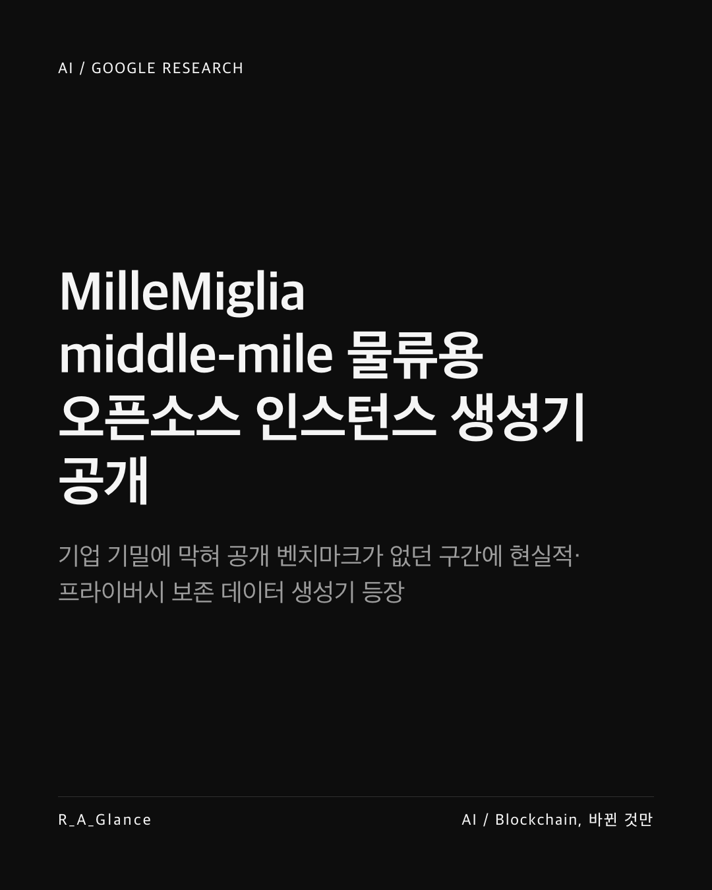
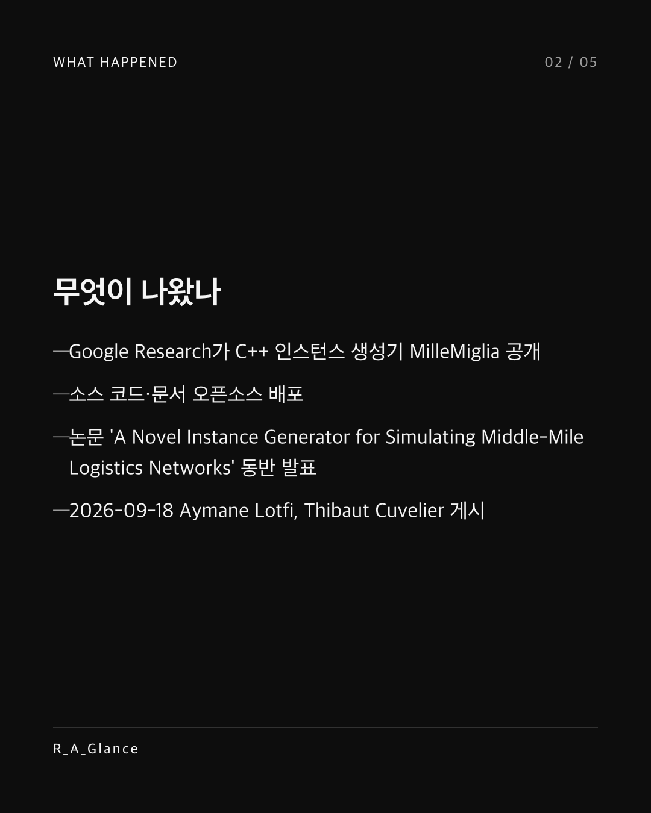
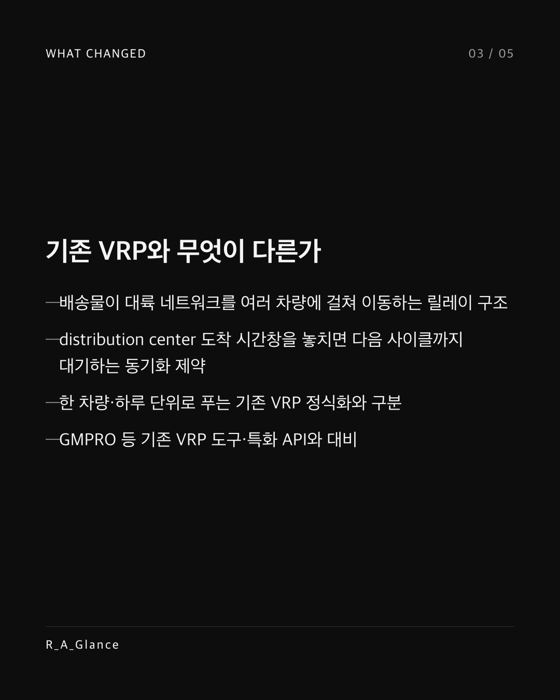
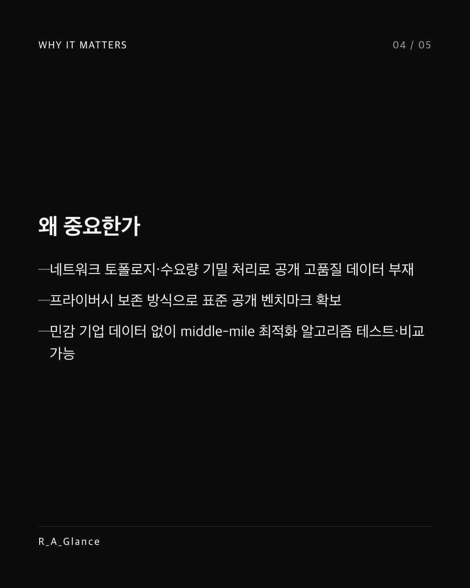
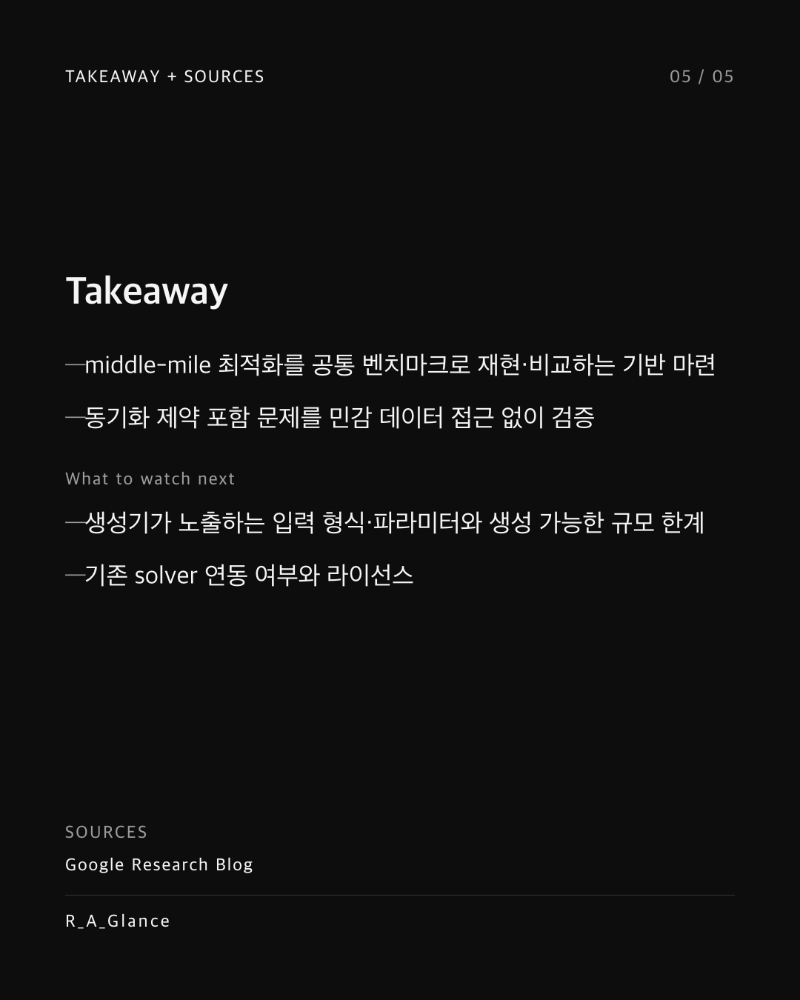

middle-mile 물류 최적화에 공개 벤치마크가 없던 이유는 데이터가 기업 기밀이기 때문이다. Google Research가 middle-mile 물류 네트워크용 오픈소스 인스턴스 생성기 MilleMiglia를 공개했다. C++로 작성된 이 생성기는 논문 'A Novel Instance Generator for Simulating Middle-Mile Logistics Networks'와 함께 소스 코드·문서가 공개 배포됐다. 배송물이 대륙 네트워크를 여러 차량에 걸쳐 이동하고, distribution center 도착 시간창을 놓치면 다음 사이클까지 대기하는 동기화 제약은 하루·한 차량 단위로 푸는 기존 VRP 정식화와 구분된다. 네트워크 토폴로지와 수요량이 기밀로 다뤄져 고품질 공개 데이터가 없던 구간에서, 프라이버시 보존 방식으로 표준 벤치마크를 확보한 점이 핵심이다. 이제 민감한 기업 데이터 없이도 middle-mile 최적화 알고리즘을 테스트하고 비교할 수 있다. 공통 벤치마크로 middle-mile 최적화를 재현·비교할 기반이 마련됐다. Sources: Google Research Blog